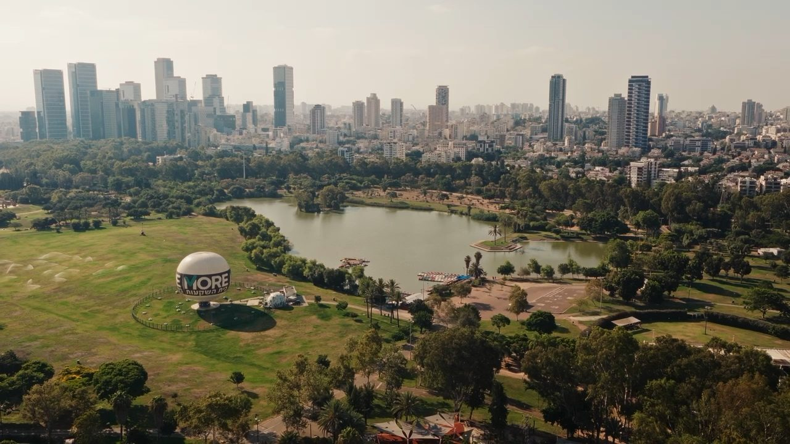

Marriage proposals
The one second where everything stops.
Photography · Film · Aerial
Stills, films and aerial work.
02/ 06
Bio, first paragraph.
Bio, second paragraph.
Civil Aviation Authority of Israel
Commercial drone operator
DJI Mavic 4 Pro
Aerial cinematography
03/ 06
Proposals and productions.
The one second where everything stops.
Dozens of small moments at once.
04/ 06
Stage light changes every second.
Reading the light before it arrives.
Shot between the soundcheck and the set.
05/ 06
Editing, colour and the finish.
Where footage turns into a scene.
One idea, told properly.

Instagram Reel Production
Social media production for ABBA Hotel.